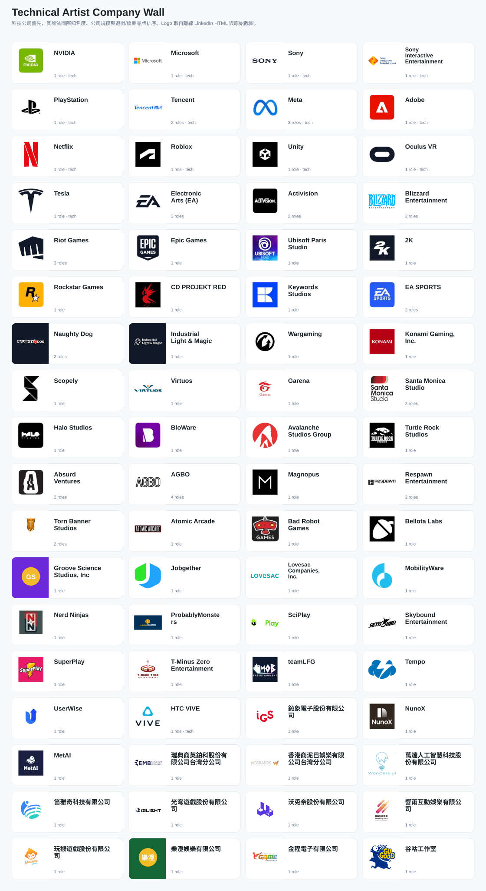

總職缺 HTML
抓到薪資的職缺
台幣年薪中位數
最高頻技能
最大變形職位
薪水
薪資資料來自 JD 公開範圍，實際薪資仍可能依經驗、職級與面談結果談得更高。
薪資只採用頁面中能辨識到的 range，不自行推估；台灣月薪樣本會另轉成年薪，原始薪資仍保留。
薪資只採用頁面中能辨識到的 range，不自行推估；台灣月薪樣本會另轉成年薪，原始薪資仍保留。
所需技能排名
JD 關鍵字排名
地區分布
資料來源
開缺日期趨勢
LinkedIn 匯出頁常只保存「幾天前」這種相對時間；這裡用相對天數分桶呈現。
Technical Artist 變形職位
公司分布
資深度
推廣「美術轉 TA」可用的市場觀察
科技公司樣本
此區特別拉出 Meta、NVIDIA、Netflix、Microsoft、Adobe、Tesla、Unity、Roblox、Tencent、Sony/PlayStation、HTC VIVE 等科技或平台型公司；Apple、Google 目前不在這批資料中。
台灣樣本
此區整合 LinkedIn、104、Cake、1111 的台灣樣本；樣本量仍有限，適合用來對照國際市場與觀察薪資區間，不宜當完整行情推估。
公司品牌牆

排序：科技公司優先，其餘依國際知名度、公司規模與遊戲/娛樂品牌知名度排序。此圖優先使用 LinkedIn 匯出與截圖中抽出的原始 logo；來源沒有可用 logo 時才以公司名稱補位。
職缺清單
| 職稱 | 公司 | 地區 | 變形職位 | 原始薪資 | 台幣年薪 | 來源 | 開缺時間 | 技能 |
|---|